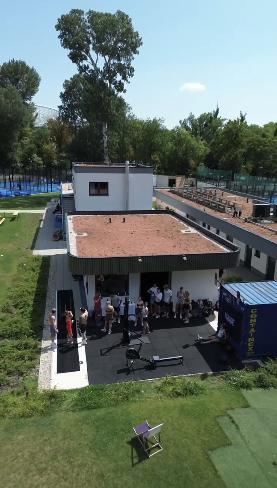
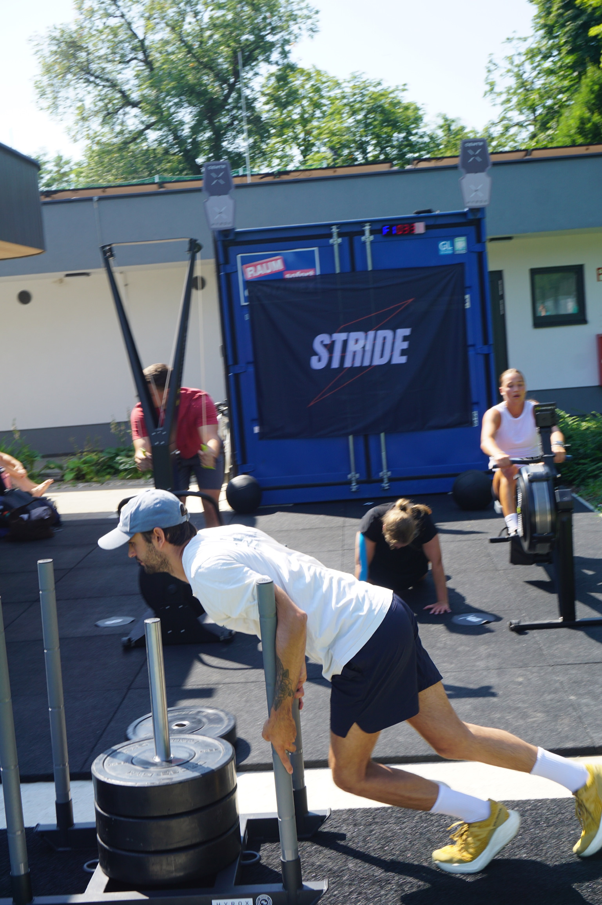
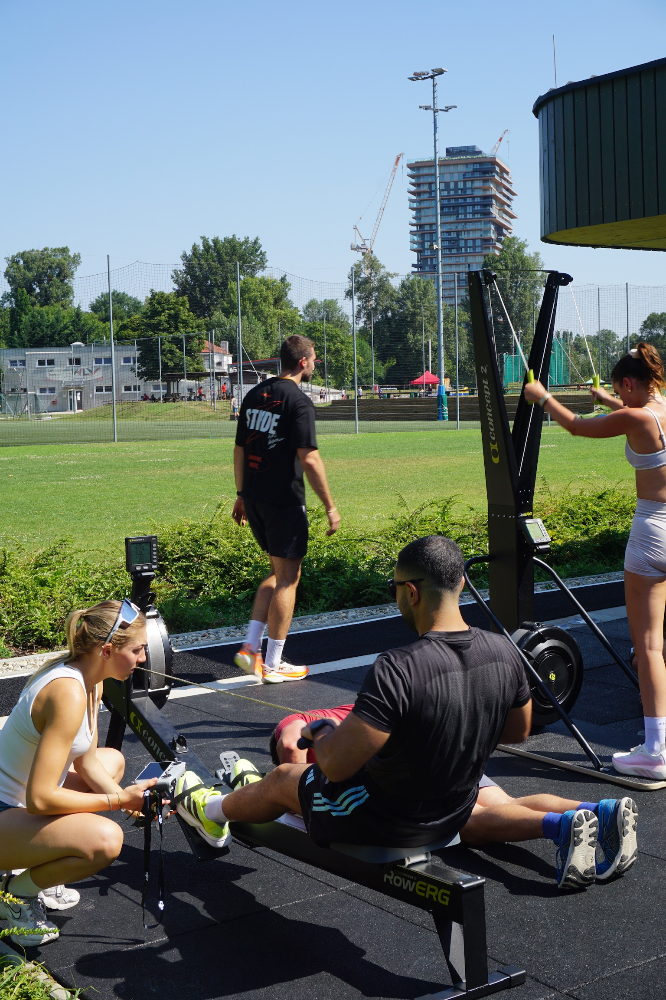
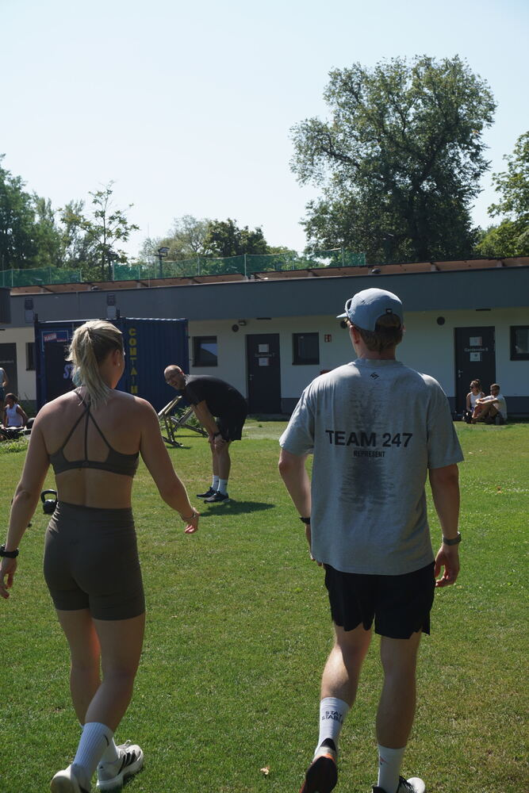
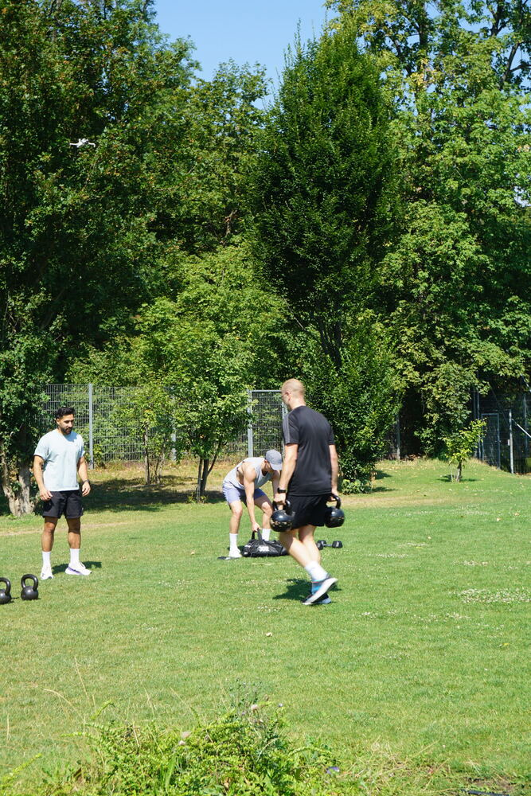
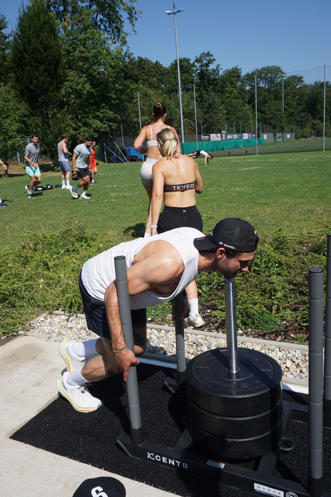
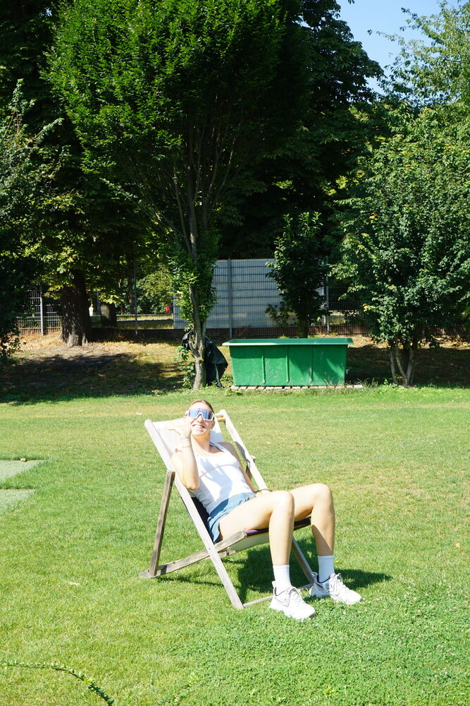
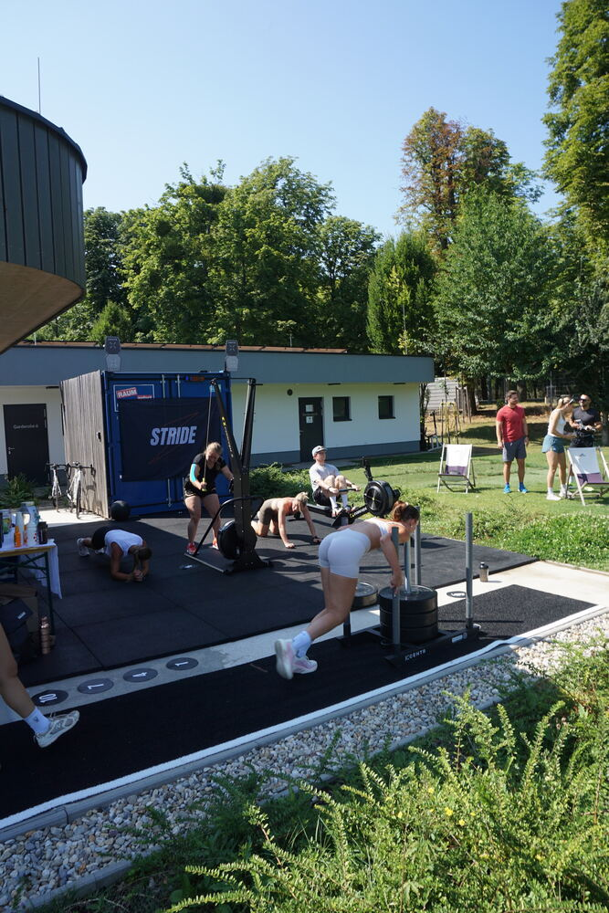
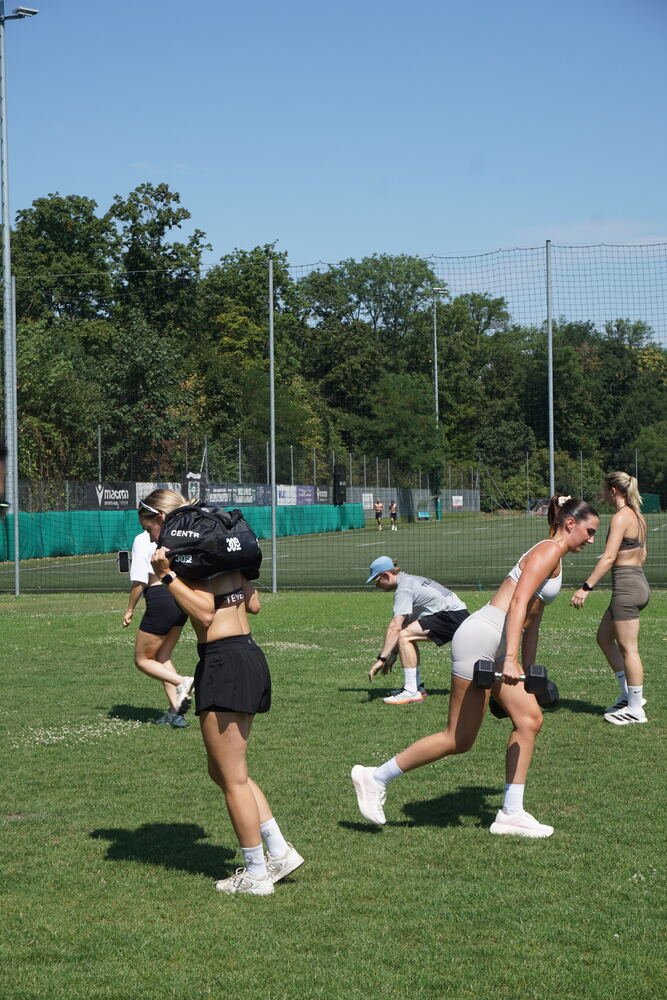
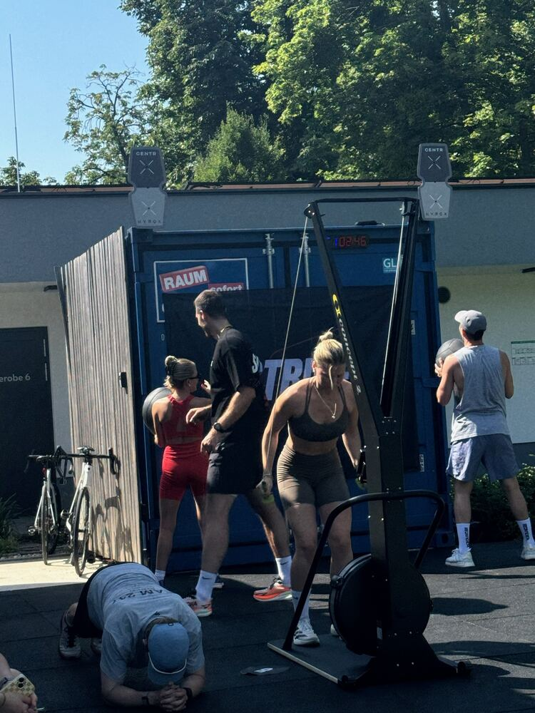

19:00–19:50
HYROX training and functional fitness training with conditioning, endurance and strength work. Monday sessions run until September.
Hybrid Training Club in Vienna
HYROX training, functional fitness training and a real community. Come for HYROX. Stay for the people.
About STRIDE
STRIDE is a Hybrid Training Club built around structured training, progress, race energy and real community.
Different levels. Same mindset. Hard training becomes better when done with the right people.
Weekly Schedule
All sessions take place at Trendsportzentrum Prater in Vienna and last 50 minutes. All levels are welcome. Until September, STRIDE trains on Monday and Wednesday from 19:00–19:50 and Sunday from 10:00–10:50. From September onwards, STRIDE takes place on Wednesdays and Sundays only.
HYROX training and functional fitness training with conditioning, endurance and strength work. Monday sessions run until September.
Structured HYROX and functional fitness training focused on effort, progress and shared energy.
HYROX training and functional fitness training for a strong start into Sunday.
Hybrid Training
Hybrid training combines strength and endurance training. Training to get both to a higher level, without sacrificing the other.
Functional fitness training that builds power, durability and confidence.
Intervals, conditioning and HYROX-style endurance work.
Race-inspired sessions.
Warm, open and social.
Pricing
Choose a single session or season pass. The outdoor season runs until approximately mid October, depending on the weather.
Perfect if you want to try one STRIDE HYROX or functional fitness training session.
Full access to all STRIDE sessions until the end of the outdoor season.
From September: €99. From October: €49. The season runs until mid October, as long as the weather allows.
The Club
Hard training, real progress and a community that keeps showing up consistently.










Location
Meiereistraße 20, 1020 Vienna
When you enter the Trendsportzentrum, walk towards the changing-room buildings. You will find us between the two changing-room buildings, all the way to the back left at the training area.
Why join?
Race-inspired sessions.
Training for people who want to improve fitness and prepare for HYROX.
Strength and conditioning with structure, scaling and clear focus.
Warm, open and social.
You can start where you are and scale the workout.
Outdoor training at Trendsportzentrum Prater in 1020 Vienna.
Find us in Vienna
STRIDE Vienna brings together people searching for HYROX training in Vienna, hybrid training in Vienna, functional fitness in Wien and a place to prepare for a HYROX near Prater.
If you are new to hybrid training, start with one session.
FAQ
No. STRIDE is built for all levels. You can start where you are and scale the workout.
No. The training is HYROX focussed, but it is perfectly suited to everyone who wants to improve fitness and structured training with a community.
Not quite. HYROX is a trend within hybrid training — a race format that combines running and functional work. Hybrid Training is the bigger idea: combining strength and endurance so you get better at both, without sacrificing either. At STRIDE, people may come for HYROX-inspired training, but hybrid training is what we're built around for the long run.
Both. STRIDE is built for people at every level who share the same mindset: show up, put in the effort, want to improve. Sessions scale to where you are, so whether you're just starting out or training for your next HYROX race, you train hard next to people at every stage.
Both work, and both are equally welcome here. A Season Pass makes the most sense if you train regularly — it gives you full access and the best value. A Single Session is the better fit if you just want to try STRIDE out or can't commit to training regularly. Come as often as fits your life.
Training shoes, sportswear, water and the willingness to put in the work.
Yes. Trendsportzentrum Prater has changing cabins and showers available.
Yes. 2.5 hours of free parking are available by car right at Trendsportzentrum Prater. STRIDE is also easy to reach by bike or via U2 Stadion.
Email us at info@strideclub.at or follow @strideclub.vienna on Instagram.
Come for HYROX. Stay for the people.
Join STRIDE for HYROX training and functional fitness training at Trendsportzentrum Prater in Vienna.